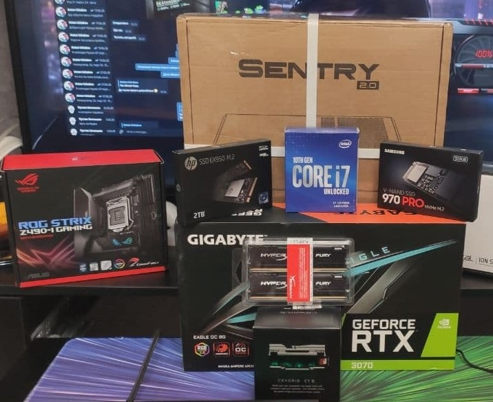
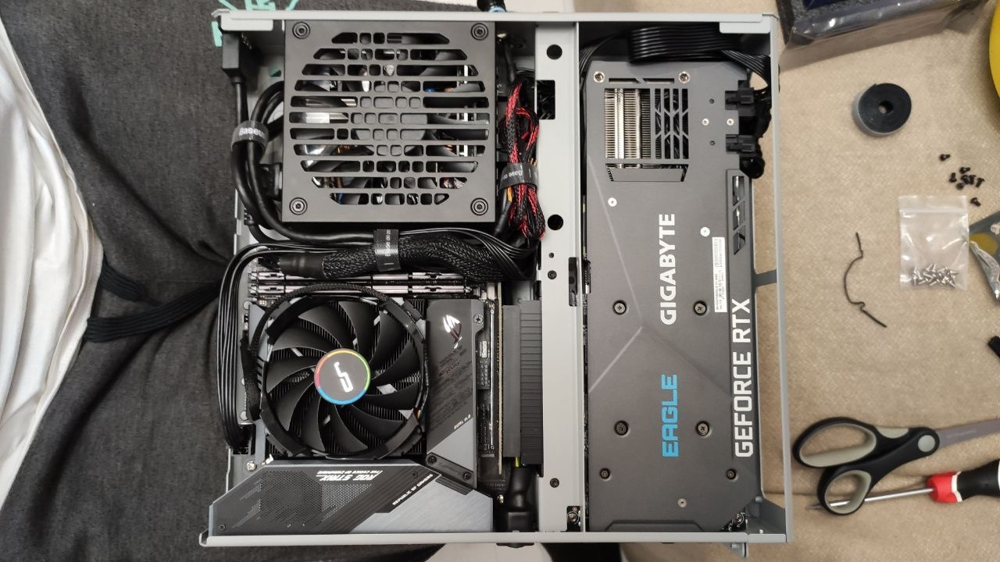
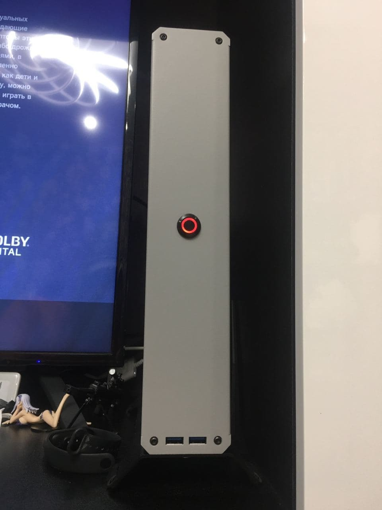

PC Build




At last, all the parts had arrived and it was time for the upgrade: a powerful PC built inside the ultra-compact Dr Zaber Sentry 2.0. Every component had to be selected around physical clearance, power and cooling, but the goal was to make as few performance compromises as possible.
The core of the system is an Intel Core i7-10700K: 8 cores, 16 threads, a 3.8 GHz base clock and Turbo Boost up to 5.1 GHz. The motherboard is the Mini-ITX ASUS ROG Strix Z490-I Gaming, paired with 32 GB of HyperX FURY DDR4.
Graphics are handled by a GIGABYTE GeForce RTX 3070 EAGLE OC 8G with 8 GB of GDDR6. The component photo also shows two NVMe drives: a 2 TB HP EX950 M.2 and a Samsung 970 PRO. The 970 PRO capacity and the exact RAM speed are not readable with enough confidence, so I am leaving those unspecified.
The fun part was fitting all of it into the Sentry 2.0. There is almost no unused volume inside: the GPU occupies its own half of the chassis, while the PSU, cabling and low-profile CPU cooling are packed in with millimetres to spare. The result is a PC closer to a console in size, but built from full desktop-class hardware.